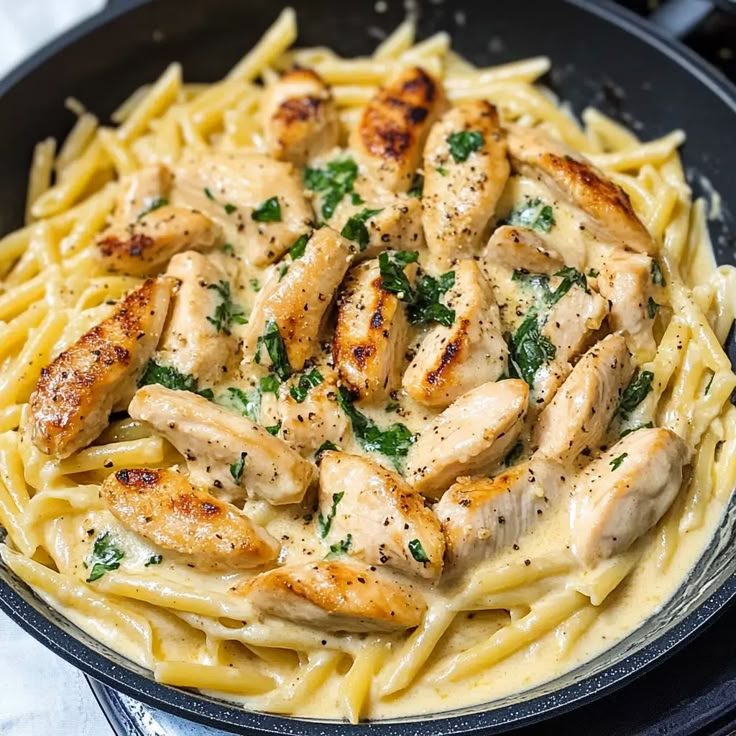

Creamy Garlic Pasta

Description
This creamy garlic pasta is the ultimate comfort food — rich, indulgent, and bursting with flavor. It's made with simple ingredients you probably already have in your kitchen, but delivers restaurant-quality taste in under 30 minutes.
The buttery garlic base blends beautifully with velvety cream and sharp parmesan cheese, creating a silky sauce that perfectly coats every strand of pasta. Whether you're cooking for family, friends, or just treating yourself, this dish is a guaranteed crowd-pleaser. Serve it with a side of crusty bread or a fresh green salad for a complete and satisfying meal.
Ingredients
- 200g spaghetti or fettuccine
- 3 cloves garlic, minced
- 2 tablespoons butter
- 1 tablespoon olive oil
- 1 cup heavy cream
- 1/2 cup grated parmesan cheese
- Salt and black pepper to taste
- Chopped parsley (optional)
Steps
- Bring a large pot of salted water to a boil and cook the pasta according to the package instructions. Drain and set aside.
- In a large skillet over medium heat, melt the butter and add olive oil.
- Add minced garlic and sauté for 1–2 minutes until fragrant, but not browned.
- Pour in the heavy cream and stir well to combine with the garlic butter.
- Let the cream simmer for 3–4 minutes, then stir in the grated parmesan cheese.
- Season with salt and black pepper to taste. Allow the sauce to thicken slightly.
- Add the cooked pasta into the skillet and toss until fully coated in the creamy sauce.
- Garnish with chopped parsley (optional) and serve immediately while hot.